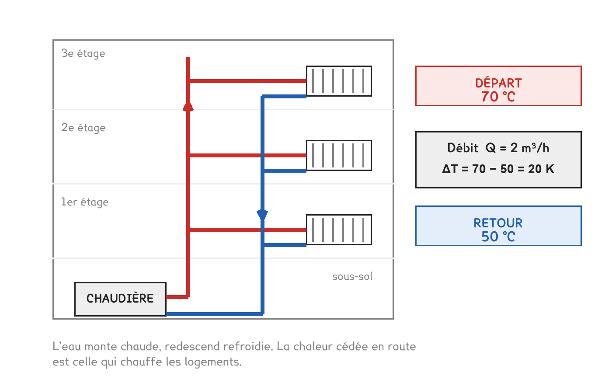

BTS FED option C · 2e année
L'énergiedans le bâtiment
Un appareil n'a pas une consommation en watts. Toute l'année tient dans cette phrase — et dans les quatre conversions qu'on ne cherchera plus jamais.
2 outils · 8 questions · 3 exercices · 5 replis · 3 figures
Savoirs travaillés
Ce que la séance a réglé
Une facture d’électricité, quatre appareils, et une phrase du locataire : « mon radiateur consomme 1 500 watts ». Elle est fausse, et c’est tout le sujet.
Cette séance installe le vocabulaire de l’année. Puissance et énergie, les quatre conversions du rituel, et l’écart de température qui ne s’ajoute pas 273.

Puissance et énergie
La puissance est ce qu’un appareil peut faire à chaque instant. Elle se mesure en watts, et ne dit rien de la durée.
L’énergie est ce qu’il a fait pendant un temps donné. C’est elle qui est facturée, et elle se mesure en wattheures.
E = P × t
- Eénergie, en Wh — ou en kWh si P est en kW
- Ppuissance, en W
- tdurée, en heures
Une puissance ne se consomme pas : elle s’appelle. C’est l’énergie qui se consomme et qui se paie.
Les quatre appareils du studio le montrent d’un coup d’œil. Le radiateur et le sèche-serviettes consomment exactement la même énergie — et leurs puissances vont du simple au triple.
| Appareil | Puissance | Durée | Énergie par jour |
|---|---|---|---|
| Radiateur électrique | 1 500 W | 8 h | 12 kWh |
| Sèche-serviettes | 500 W | 24 h | 12 kWh |
| Ballon d’eau chaude | 2 000 W | 3 h | 6 kWh |
| Plaque à induction | 3 000 W | 0,5 h | 1,5 kWh |
La durée compte autant que la puissance. Un petit appareil qui tourne en permanence coûte plus cher qu’un gros appareil utilisé une demi-heure. C’est le sèche-serviettes qui fait la facture, pas la plaque à induction.
La puissance sert à autre chose qu’à la facture : elle décide de l’abonnement. Les quatre appareils ensemble appellent 7 kW ; un abonnement de 6 kVA ne suffit pas, et le disjoncteur coupe. Deux questions différentes, deux grandeurs différentes.
Le rituel des unités
Ces conversions reviendront à chaque séance de l’année. Elles doivent devenir automatiques : les chercher coûte du temps à l’épreuve.
| Grandeur | À savoir sans réfléchir |
|---|---|
| Débit | 1 m³/h = 1 000 L/h · 1 L/s = 3,6 m³/h |
| Puissance | 1 kW = 1 000 W |
| Énergie | 1 kWh = 3 600 kJ |
| Pression | 1 bar = 100 000 Pa ≈ 10 mCE |
Un écart de température en degrés Celsius vaut le même nombre en kelvins. Passer de 65 à 45 °C, c’est 20 °C d’écart, et c’est aussi 20 K. On n’ajoute pas 273 à un écart — seulement à une température.
Ce que le bâtiment fait de cette énergie
La chaleur produite ne reste pas dedans. Elle part par les parois, et elle part avec l’air qu’on renouvelle. Toute l’année consistera à chiffrer ces deux fuites, puis à les réduire.

Entre le générateur et l’émetteur, c’est l’eau qui transporte. La puissance qu’elle porte ne dépend que de deux choses : combien il en passe, et de combien elle se refroidit en chemin.
P = Q × 1 163 × ΔT
- Ppuissance transportée, en W
- Qdébit d’eau, en m³/h
- ΔTécart départ / retour, en K
Pour l’air, le coefficient devient 0,34 au lieu de 1 163 : l’air transporte environ 3 400 fois moins par mètre cube.
Ce qu’on a fait en séance
- Distinguer ce que mesure un watt et ce que mesure un kilowattheure
- Compléter le tableau des quatre appareils, et trouver les deux qui consomment autant
- Calculer le coût du mois de janvier, et dire sur quel appareil agir en priorité
- Vérifier si l’abonnement de 6 kVA tient quand tout fonctionne ensemble
- Faire le rituel des unités, et poser un écart de température en kelvins
À observer en entreprise
Relever la puissance de l’abonnement électrique du bâtiment, et la consommation annuelle figurant sur une facture. Photographier la plaque signalétique d’un générateur : sa puissance y est écrite, en kW.
Demander quelle est la surface chauffée du bâtiment, et calculer le rapport de la consommation annuelle à cette surface. Ce nombre servira en séance 5.
Vous vérifier
- Un watt mesure : une puissance | une énergie
- « Mon radiateur consomme 1 500 watts » est : faux, il appelle 1 500 W | correct
- 1 kWh vaut : 3 600 kJ | 1 000 kJ
- 3,6 m³/h vaut : 1 L/s | 3,6 L/s
- Un écart de 20 °C vaut, en kelvins : 20 K | 293 K
- Deux appareils de puissances différentes peuvent consommer la même énergie : oui, si les durées compensent | non, jamais
- Ce qui décide de la taille de l’abonnement, c’est : la puissance appelée | l’énergie consommée
- Pour l’eau, P = Q × 1 163 × ΔT demande un débit en : m³/h | L/s
S’entraîner
Exercice · A2-4
Le sèche-serviettes de janvier
Un sèche-serviettes de 500 W fonctionne 24 h sur 24 pendant les 31 jours de janvier. Quelle énergie consomme-t-il sur le mois ?
Exercice · A2-3
Ce que porte un réseau
Un réseau de chauffage transporte de l’eau à 1,5 m³/h, avec un régime 70/50. Quelle puissance transporte-t-il ?
Exercice · A2-4
Sur quel appareil agir ?
Le locataire veut réduire sa facture. Le radiateur appelle 1 500 W, le sèche-serviettes 500 W. Expliquez en trois lignes lequel vous traitez en priorité, et pourquoi.
- J’ai comparé des énergies, pas des puissances.
- J’ai dit que les deux consomment autant, 12 kWh par jour.
- J’ai proposé d’agir sur la durée du sèche-serviettes, pas sur sa puissance.
Pour aller plus loin
Pour aller plus loin
D'où sort le 1 163, et pourquoi il n'est pas magiquePour aller plus loin›
Le coefficient n’est pas une constante physique : c’est une conversion d’unités que quelqu’un a faite une fois pour toutes, pour éviter de la refaire à chaque calcul.
La puissance transportée par un fluide s’écrit, en unités du système international :
P = qm × Cp × ΔT avec qm en kg/s, Cp en J/(kg·K), P en W
Pour l’eau, la masse volumique vaut environ 1 000 kg/m³ et la chaleur massique 4 186 J/(kg·K). Si l’on veut entrer un débit en m³/h plutôt qu’en kg/s, il faut diviser par 3 600 :
1 000 × 4 186 / 3 600 = 1 163
Le même raisonnement donne le 0,34 de l’air. Masse volumique 1,2 kg/m³, chaleur massique environ 1 005 J/(kg·K) :
1,2 × 1 005 / 3 600 = 0,335, arrondi à 0,34
Le rapport entre les deux vaut environ 3 470. À débit égal, l’eau transporte trois mille cinq cents fois plus de puissance que l’air. C’est la raison pour laquelle on chauffe un bâtiment avec de l’eau et qu’on ne le ventile qu’avec de l’air — et c’est aussi pourquoi les gaines sont énormes à côté des tuyaux.
Les deux coefficients supposent des conditions. Le 1 163 vaut pour de l’eau autour de 60 °C ; le 0,34 pour de l’air à 20 °C sous pression atmosphérique normale. Les écarts sont de quelques pour cent, sans conséquence en avant-projet — mais ils expliquent que deux documents ne donnent pas toujours exactement le même nombre.
Le kilowattheure, le joule, et pourquoi on garde les deuxPour aller plus loin›
Le joule est l’unité légale de l’énergie ; le kilowattheure est celle des factures. Les deux coexistent, et il faut savoir passer de l’une à l’autre sans hésiter.
1 kWh = 1 000 W × 3 600 s = 3 600 000 J = 3 600 kJ = 3,6 MJ
Pourquoi la facture n’est pas en joules. Parce que le joule est minuscule à l’échelle d’un bâtiment. Une consommation annuelle de chauffage de 8 000 kWh s’écrirait 28 800 000 000 J. Le kilowattheure a la bonne taille pour l’usage.
Où le joule revient quand même, et où il faut donc savoir convertir :
| Grandeur | Unité usuelle | Ce que ça implique |
|---|---|---|
| Chaleur massique de l’eau | 4 186 J/(kg·K) | on divise par 3 600 pour obtenir des Wh |
| Enthalpie de l’air humide | kJ/kg d’air sec | séances 15 et 16, en kJ, jamais en Wh |
| Pouvoir calorifique d’un combustible | kWh/m³ ou kWh/kg | la facture de gaz, séance 11 |
| Chaleur de vaporisation de l’eau | 2 501 kJ/kg | l’humidification, séance 15 |
Les deux familles ne se mélangent pas dans un même calcul. Une puissance en kW multipliée par une durée en heures donne des kWh ; multipliée par une durée en secondes, elle donne des kJ. Le facteur 3 600 entre les deux est l’erreur la plus fréquente de toute la première séquence — et elle passe inaperçue, parce que le résultat reste un nombre plausible.
Lire une facture, et savoir ce qu'on y paiePour aller plus loin›
Une facture d’énergie ne se résume jamais à un prix multiplié par une consommation. Elle a deux termes, et cette structure revient pour toutes les énergies de réseau — électricité, gaz, chaleur urbaine.
| Terme | Ce qu’il mesure | Ce qui le fait varier |
|---|---|---|
| Part variable | l’énergie réellement consommée | ce qu’on utilise |
| Part fixe ou abonnement | la puissance mise à disposition | la puissance souscrite, pas la consommée |
La part fixe se paie même sans rien consommer. C’est la contrepartie du dimensionnement du réseau, du branchement, du compteur — l’opérateur a immobilisé une capacité pour vous.
D’où deux leviers d’économie, complètement différents :
- consommer moins — isoler, réguler, éteindre. Agit sur la part variable ;
- souscrire moins de puissance — lisser les pointes pour n’avoir jamais besoin du maximum. Agit sur la part fixe, toute l’année.
Le second levier est celui qu’on oublie, et il rapporte parfois davantage. Un ballon d’eau chaude qui absorbe la pointe permet de souscrire moins de puissance : on retrouvera exactement ce raisonnement en séance 10 sur l’ECS, et en séance 11 sur la facture d’un réseau de chaleur.
Le prix du kilowattheure n’est donc pas le prix de la facture divisé par la consommation. Ce rapport inclut la part fixe, et il est d’autant plus élevé qu’on consomme peu. À l’épreuve, on utilise le prix unitaire du terme variable, celui qui est écrit au CCTP — pas un prix moyen reconstitué.
Énergie finale, énergie primaire, et pourquoi les deux comptentBureau d'études›
Le kilowattheure de la facture est de l’énergie finale : celle qui entre dans le bâtiment, au compteur. Ce n’est pas la même chose que ce qu’il a fallu mobiliser pour la produire et l’acheminer.
L’énergie primaire compte tout : l’extraction, la transformation, les pertes de rendement de la production, le transport. Pour une même énergie finale utilisée dans le logement, la quantité de ressource consommée en amont diffère énormément selon le vecteur.
Ce que ça change concrètement :
- deux bâtiments qui consomment le même nombre de kWh finaux n’ont pas le même bilan réglementaire si l’un est chauffé à l’électricité et l’autre au gaz ;
- une pompe à chaleur qui affiche un COP de 3 divise la consommation finale par trois — et son avantage en énergie primaire dépend, lui, du coefficient appliqué à l’électricité ;
- le classement énergétique d’un logement se fait sur un indicateur en énergie primaire, pas sur la facture.
On ne compare jamais deux solutions sans dire en quelle énergie on compte. Un même projet peut sembler gagnant en finale et neutre en primaire, ou l’inverse. Un dossier sérieux précise toujours la base — et un sujet d’épreuve la donne.
Les coefficients de conversion et leur évolution ne se récitent pas : ils relèvent de la réglementation en vigueur, ils changent, et le sujet fournit celui qui s’applique. Ce qui se retient, c’est la distinction, et le réflexe de demander « finale ou primaire ? » avant de comparer.
Et un troisième indicateur est apparu, qui ne mesure plus de l’énergie du tout : le contenu carbone, en grammes de CO₂ par kilowattheure. Il classe les vecteurs dans un ordre encore différent des deux premiers. Trois indicateurs, trois classements possibles : c’est ce qui rend les arbitrages énergétiques du bâtiment plus difficiles qu’ils n’en ont l’air.
Ce qu'un watt vaut vraiment : les ordres de grandeur du métierBureau d'études›
Un technicien reconnaît un résultat faux avant de l’avoir vérifié, parce qu’il porte en tête une échelle. La voici, et elle sert toute l’année.
| Ce dont on parle | Ordre de grandeur |
|---|---|
| Un occupant au repos | ≈ 100 W — l’équivalent d’une vieille ampoule |
| Un ordinateur portable | quelques dizaines de W |
| Un radiateur de chambre | 1 à 1,5 kW |
| Le chauffage d’une maison neuve | 4 à 6 kW |
| Le chauffage d’une maison ancienne | 15 à 25 kW |
| Une chaufferie de petit collectif | 50 à 200 kW |
| Une sous-station d’immeuble de bureaux | quelques centaines de kW |
Le ratio qui résume tout, en surfacique :
| Bâtiment | Puissance de chauffage |
|---|---|
| Passif ou EnerPHit | 10 à 20 W/m² |
| Neuf réglementaire | 30 à 50 W/m² |
| Ancien non isolé | 100 à 150 W/m² |
Un facteur dix sépare le passif de l’ancien non isolé. C’est tout l’enjeu de la séquence 1 : ce facteur ne vient pas des machines, il vient de l’enveloppe. Le générateur ne fait que fournir ce que le bâtiment perd.
Comment s’en servir à l’épreuve. Après chaque calcul de puissance, on divise mentalement par la surface et on compare à ce tableau. Un résultat à 400 W/m² est faux ; un résultat à 2 W/m² aussi. Cette vérification prend cinq secondes, et elle rattrape les erreurs de facteur 1 000 — celles qu’on ne voit jamais en relisant sa ligne de calcul.
Cette page rappelle la séance. Elle ne remplace pas le polycopié et ne donne aucun corrigé. Tous les calculs se font dans votre navigateur ; rien n'est enregistré.